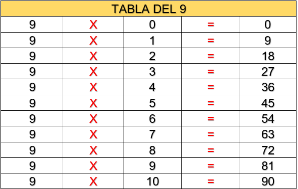

LOS CONJUNTOS
Un conjunto es un grupo de elementos que tienen algo en común, por ejemplo en la anterior imagen es un conjunto de animales.
Cualquiera de nosotros puede crear un conjunto, ya sea de numeros o de los miembros de tu familia. Tienes muchas posibilidades.
Ahora dibuja en tu cuaderno dos circulos similares a la siguiente imagen, y dibuja dentro de cada uno un conjunto que tu quieras.
Ten en cuenta que hay distintos tipos de conjuntos, que veras en los proximos temas.
Por ahora te pondre un ejercicio, que sacamos de la pagina de la pagina de La web del docente por lo que te invito a que lo realices en tu cuaderno.
Actividad
Mira los dibujos que estan en la siguiente imagen, y luego ubicalos en su respectivo conjunto
UNION DE CONJUNTOS
La unión de conjuntos es sencillo, imagina que tienes dos conjuntos, uno de medios de trasnporte y otro de animales. Entonces para agrupar los dos conjuntos, basta con encerrarlos dentro de otro circulo o cuadrado como tu quieras, para obtener un nuevo conjunto que estan unidos.
Para identificar que dos o mas conjuntos estan unidos, se le denota con una especie de U, como se ve en la imagen anterior. Para que no olvides colocar dicha representación.
Ahora resuelve la siguiente actividad sacada de la pagina de La web del docente en tu cuaderno.
iNTERSECCIÓN DE CONJUNTOS
La intersección es el punto donde dos conjuntos coinciden, es decir, es el punto donde encontramos elementos que tienen una característica común con elementos de otro o más conjuntos.
Recuerda que la interseccion de conjuntos, son aquellos elementos de cada uno que tiene en comun y ahi se forma un nuevo subconjunto. y su representación grafica se da como con una especie de U alreves.
Actividad
En tu cuaderno dibuja los siguientes ejercicios de conjuntos y luego excribe la interseccion:
ADICIÓN
La suma o adición es una operación basica que se representa con el signo +.
Llamamos suma a la acción de añadir, juntar o agregar elementos
¿Pero como podemos aprender a sumar? Es sencillo, lo que vas a hacer es hacerlo de manera grafica, por ejemplo, te dicen "Tienes 1 manzana, y tu mamá te da 2 manzanas mas, ¿cuantas manzanas tienes ahora?
Lo que haras, es que imaginate o dibuja cada grupo de manzanas, como esta en la imagen, y luego empieza a enumerarlas y ahi estarias sumando, por lo que si hiciste el ejercicio bien, te tuvo que haber dado 3 manzanas, Sencillo ¿no?
Es asi con cualquier numero, que te coloquen, es una manera sencilla de aprender a sumar.
Ahora bien, hay muchas maneras de sumar,un de esas es la siguiente imagen donde hay una tabla de sumas, donde buscas el numero en la fila superior horizontal, y la combinas con la columna izquierda vertical y ahi obtendras el resultado.
Si nos vamos a una suma mucho mas elaborada, hay que seguir los siguientes pasos:
- Colocar los sumandos uno debajo del otro, de manera que coincidan las unidades en la misma columna.
- Sumar cada columna por separado empezando por las unidades.
- El resultado de la suma se escribe debajo de cada columna y de la línea de resultado.
Entonces de esta manera, para el siguiente ejemplo, mira los pasos descritos
Sumemos 32 + 64. Ponemos el 32 y debajo el 64, haciendo que coincidan las unidades, es decir, el 2 y el 4. Sumamos 2 + 4 = 6 y lo ponemos debajo de la columna de las unidades. Sumamos 3 + 6 = 9 y lo ponemos debajo de la columna de las decenas.
Recuerda practicar y poco a poco mas a mejorar hasta el punto que ya sabras hacer sumas mentalmente, por eso te dejo el siguiente boton, donde puedes practicar suma y resta.
SUSTRACCIÓN
La sustracción o restar es quitar una cierta cantidad a otra que ya teníamos y se representa con el signo menos ( - ).
De esta manera, por ejemplo si tenemos 5 manzanas y le quitamos 2 manzanas, ¿cuantas manzanas tengo ahora?
O si tenemos por ejemplo tenemos 8 balones, pero quitamos 3 balones, ¿Cuantos balones tenemos ahora?
Entonces, la resta funciona de una manera sencilla, lo que vas a hacer el tomar el primero numero que te den, y con tus dedos señala dicha cantidad, y luego el segundo numero que te den, empieza a bajar dedos, y ahi tendras tus respuesta.
Esto puedes aplicarlo de cualqueir manera, imaginar palitos o circulos e ir quitando, por ejemplo:

Si ves que es super sencillo, entonces practica para que aprendas a restar a la perfección, y en el siguiente boton, ahy unos ejercicios de suma y resta, solo basta con que eligas que quieres restas.
LA MULTIPLICACIÓN
Te invito a que veas el siguiente video, donde te explican la multiplicación de la manera mas facil.
De esta manera multiplicar es lo mismo que sumar varias veces el mismo número
Ahora te dejare las tablas de multiplicar del 1 al 10, para que las repases y te las aprendas, y al final hay un audio con una canción para que te las aprendas mucho mas facil

LA DIVISIÓN PARA NIÑOS
Antes de empezar a aprender a dividir tienes que saber las tablas de multiplicar. Mira el siguiente video, donde te explican que es la división de manera facil para que lo entiendas.
¿Que es la división?
Una división es una operación matemática que consiste en dividir un número en partes iguales. La división tiene las siguientes partes:
-DIVIDENDO: es el número que vamos a dividir
-DIVISOR: es el número que divide al dividendo, es decir la cantidad de partes en la que queremos dividir al dividendo.
-COCIENTE: es el resultado de la operación
-RESTO: es la parte que sobra, es decir que no se ha podido distribuir.
¿Entonces como se resuelve una división?
FIGURAS GEOMETRICAS
Las figuras geométricas son aquellas que tienen superficies planas delimitadas por líneas que pueden ser curvas o rectas.
Hay distintos tipos de figuras geometricas, entre las cuales se encuentran:
Triangulos: Toda aquella figura que esta compuesta por 3 lados, hay triangulos rectangulos, es aquel que tiene un angulo que mide 90°, Acutangulo, es cuando sus tres ángulos miden menos de 90°, y los obtusángulos, son cuando uno de sus ángulos mide mas de 90°. Hay unos tipos de triangulos que se clasifican segun el tamaño de sus lados, y este esta dado, de la siguiente manera: Equilatero (3 lados iguales), isósceles (2 lados miden igual y el otro distinto) y el escaleno (Todos los lados son distintos).

Cuadriláteros: Son aquellos que estan compuestos por 4 lados, como por ejemplo el rombo, el rectangulo, el cuadrado, paralelogramo, trapecio, trapezoide, etc.
Figuras geometricas de mas de 4 lados: Estas hay muchisimas, como lo son el pentagono, que tiene 5 lados, o el hexagono que iene 6 lados, e incluso hay figuras de 10 lados y asi sucesivamente.